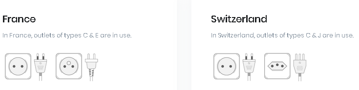
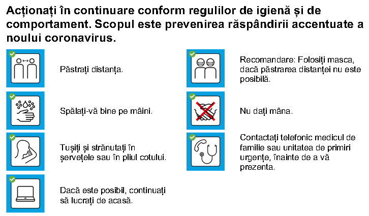

Program
24
SEPT
Întâmpinarea participanților
- Joi, începând cu ora 16
- Youth Hostel Bern
25
SEPT
Activitate în aer liber
- Vineri
- Gara Centrală Berna
- Drumeție în Alpi (plecare dis de dimineață)
- Vizita orașului Berna (începând cu ora 10)
- Biserica Româneasca din Berna
- Cina
- Activități de relaxare, jocuri
26
SEPT
Tedeum. Conferințe. Ateliere
- Sâmbătă
- Biserica Româneasca din Berna
- Slujba Tedeum oficiata de Î.P.S. Iosif
- Mic dejun
- Prima conferință
- Prânz
- A doua conferință
- Ateliere
- Cina
- Activități de relaxare, jocuri
27
SEPT
Sfânta Liturghie. Cuvântul Î.P.S. Iosif
- Duminică
- Biserica Româneasca din Berna
- Sfânta Liturghie Arhierească
- Cuvântul Î.P.S. Iosif
- Prânz
Invitați
Preasfințitul Părinte Teofil
Arhiereu Vicar al Episcopiei Ortodoxe Române a Spaniei și Portugaliei
Preasfințitul Teofil de Iberia s-a născut în anul 1971 în localitatea Desești, județul Maramureș, și a urmat Seminarul Teologic Ortodox și Facultatea de Teologie din Cluj-Napoca. După studii, a fost închinoviat în obștea Mănăstirii Nicula, unde a fost tuns în mohahism și apoi hirotonit ierodiacon. Între anii 1995-2008 a împlinit slujirea de duhovnic al Sfintei Mănăstiri „Izvorul Tămăduirii” din localitatea Salva, județul Bistrița-Năsăud, iar între 2002-2008 a primit ascultarea de Exarh al mănăstirilor din Arhiepiscopia Vadului Feleacului și Clujului. Din 2008 a fost eclesiarhul Catedralei Mitropolitane din Cluj-Napoca, preluând și ascultarea de președinte al Consistoriului Monahal Eparhial.
A fost ales Arhiereului-vicar al Episcopiei Ortodoxe Române a Spaniei și Portugaliei în cadrul şedinţei Sfântului Sinod al Bisericii Ortodoxe Române din ziua de 15 februarie 2018 și hirotonit episcop în data de 15 aprilie 2018, în Duminica Tomei, în Catedrala Ortodoxă Română din Madrid.
Conf. Dr. Adrian Papahagi
Facultatea de Litere a Universității „Babeș-Bolyai”, Cluj-Napoca
Adrian Papahagi s-a născut la Cluj în 1976. Este conferențiar la Facultatea de Litere a Universității „Babeș-Bolyai”. Medievist, doctor în filologie la Universitatea Paris IV-Sorbonne (2006). A publicat zeci de studii de medievistică, dintre care cele mai recente sunt "Creștinul în cetate: Manual de supraviețuire", 2017 și "Manuscrisele medievale latine din România. Census" (coord.), 2018.
S-a implicat în viața publică din România, sprijinind mai multe proiecte de reformă a Dreptei democratice și a fost consilier al ministrului Afacerilor Externe. Susține constant conferințe publice despre valorile creștine în societatea contemporană.
Costuri
Costurile pe care fiecare participant trebuie să le suporte sunt:
1. Transportul până la Berna
2. Cazarea
Pentru a optimiza costurile de cazare, aveți în vedere cazarea de grup intermediată de Nepsis Elveția.
3. Masa
Vor fi oferite 4 mese la Parohia Românească Berna, conform programului anunțat. O masă conține trei feluri de mâncare (ciorbă, felul principal și desert) și costă 10 CHF.
4. (opțional) Costuri pentru activitatea de vineri
Pentru ziua de vineri participanții vor putea alege între două activități: turul orașului (0 CHF) sau drumeția în Alpi (55 CHF) - vezi delatii în secțiunea Activități.
5. Taxa de participare
Pentru a acoperi toate celelalte cheltuieli, vom percepe o taxă simbolică de participare de 10 CHF.
6. Asigurarea medicală de călătorie
Cazare
Nepsis Elveția a negociat o ofertă de cazare de grup cu Bern Youth Hostel, deoarece oferă condiții foarte bune de cazare, este situat în centrul orașului Berna și e aproape de gara centrală. Accesul la gară este important pentru a putea ajunge la Parohia Românească Berna (situată la marginea orașului, la 3 minute cu trenul).
În formularul de înscriere puteți opta pentru cazarea intermediată de Nepsis Elveția în limita locurilor disponibile.
Oferta congresului
Oferta de mai jos include cazare, taxa de turist, Bern Ticket (daypass pentru transportul local) și mic dejun.
| Tipul cazării | |
|---|---|
| loc în cameră cu 2 paturi, cu baie proprie | |
| loc în cameră cu 4 paturi, cu baie proprie | |
| loc în cameră cu 4 paturi, baie pe hol | |
| loc în cameră cu 6 sau 8 paturi, baie pe hol |
Detalii cazare:
- Check-in: începând cu ora 15 (recepția este deschisă non-stop; pentru check-in după ora 22, anunțați înainte)
- Check-out: înainte de ora 10 am
- Mic dejun (inclus în preț): între 6.30 și 9.30 am
- Există prosoape doar în camerele duble. Pentru toate celelalte camere veniți cu propriul prosop sau puteți închiria de la hostel.
- Se pot depozita bagaje înainte de check-in sau după check-out.
- Parcare: 7 CHF pe zi (necesită rezervare apriori)
- Bern Ticket (inclus în preț): biletul acoperă transportul local în zonele 100 și 101 (include zona unde este situată Parohia Românească Berna). Biletul este valabil din ziua sosirii și până în ziua plecării.
- Alte detalii pot fi consultate pe website-ul Bern Youth Hostel.
Activități
Pentru ziua de vineri puteți alege una dintre următoarele activități:

Vizita orașului Berna
Turul ghidat organizat de voluntarii Nepsis va avea loc în prima jumătate a zilei.
Drumeție în Alpi
Notă: telecabina și o variantă de drumeție sunt disponibile și persoanelor în scaun cu rotile.
Adrese și numere utile
Adrese utile
- Parohia Ortodoxă Berna: Kastellweg 7, 3004 Bern. Din gara centrală Berna se ia trenul S9 2 stații (3 minute) până la Bern Tiefenau.
- Bern Youth Hostel: Weihergasse 4, 3005 Bern.
Numere de urgență
- Poliția: 117
- Pompierii: 118
- Ambulanța: 144
- Numărul European de urgență: 112
- Numărul de urgență al Ambasadei Române în Elveția: +41 (0)76 387 50 05
Ghidul Nepticului în Elveția
Pentru cei care nu cunosc Elveția foarte bine, am alcătuit acest ghid cu informații care credem că îți vor fi folositoare.
-
Zbor direct
Dacă veniți prin aeroportul din Berna, transportul de la aeroport la cazarea de tip hotel/hostel este inclusă în Bern Ticket-ul oferit de unitatea de cazare.
Cu trenul
Sistemul de transport feroviar în Elveția este extrem de eficient și punctual și există conexiuni directe și frecvente spre Berna din aeroporturile Zurich, Basel și Geneva. Conexiunile și orele exacte pot fi consultate pe site-ul SBB.
Deoarece trenurile sunt destul de scumpe pentru turiști, vă recomandăm bilete supersaver (pentru un bilet nominal și la oră fixă), care pot fi cu până la 70% mai ieftine decât prețul întreg. Biletele supersaver sunt limitate, în regim primul-venit, primul-servit și prețul crește cu cât lumea le cumpără (ca la avion). O altă opțiune sunt biletele de grup.
Sfaturi generale:- În general, biletele de tren nu sunt pentru o oră fixă, ci doar pentru un traseu într-o anumită zi. Iar călătorii pot lua orice tren de la orice oră în acea direcție. Dar aceste biletele sunt foarte scumpe pentru turiști.
- Biletele online, dacă nu sunt de grup, pot fi luate cu 30 de zile înainte.
- Puteți arăta biletul fie printat, fie pe telefon (PDF sau prin aplicația SBB), controlorul scanează QR code-ul biletului.
- Aveți wifi gratuit în aproape toate stațiile de tren din Elveția cu orice număr de telefon pe care puteți primi un SMS (pentru obținerea accesului la wifi).
- Atenție: luând bilete din timp, veți economisi mult.
- Atenție: biletul redus 1/2 se aplică doar tinerilor sub 16 ani și abonaților demi-tarif (abonament disponibil rezidenților în Elveția). Deci nu se aplică studenților etc.
Cu autobuzul
FlixBus oprește și la Berna și poate fi o opțiune pentru distanțe scurte.
Cu mașina personală
Vigneta pentru Elveția costă 40 CHF / an și nu se poate cumpăra pentru o perioadă mai scurtă. Se poate cumpăra de la benzinării, oficii poștale, stații de tren.
În Elveția autostrăzile sunt semnalizate prin culoarea verde. Limitele de viteză sunt 120 km/h pe autostrăzi, 80 km/h în afara localităților și 50 km/h în localități (unde pot fi și zone cu 20 km/h).
Pentru parcare, este bine să întrebați din timp acolo unde veți fi cazați. Situația parcărilor subterane din Berna o găsiți pe parking-bern.ch. Detalii despre parcarea stradală găsiți pe car-parking.eu. -
Dacă veți lua cazarea intermediată de Nepsis Elveția (vezi mai sus), sau orice cazare la unități de tip hotel, hostel, vi se va da un Bern Ticket inclus în prețul sejurului, cu care veți putea circula în oraș și împrejurimi (inclusiv până la parohia românească). Altfel, biletele de transport în comun sunt relativ scumpe - puteți verifica pe site-ul Libero (considerați și acest aspect când căutați alternative gen airbnb - să întrebați dacă oferă Bern Ticket).
Atenție: biletul Libero redus 1/2 se aplică doar tinerilor sub 16 ani și abonaților demi-tarif (abonament disponibil rezidenților în Elveția). Deci nu se aplică studenților etc.
-
Parohia ortodoxă română Sfântul Mare Mucenic Gheorghe din Berna (website) este situată la marginea orașului, la două stații cu trenul (3 minute) de la gara centrală din Berna. Legăturile sunt foarte bune - 4 trenuri pe oră, la interval de 15 minute. Pentru a vedea orarul trenurilor consultați siteul sbb.ch pentru ruta Bern - Bern Tiefenau. Biletul de tren pentru această ruta este inclus în Bern Ticket.
De la stația Bern Tiefenau se ajunge imediat la biserică, care este peste drum de gară (adresa exactă: Kastellweg 7).

-
În supermarket
Cele mai avantajoase magazine sunt: Lidl, Aldi, Denner. Cele mai comune magazine sunt Migros și Coop (lanțuri elvețiene), dar și acestea au brand-uri ieftine: Coop Prix Garantie și Migros Budget.
Cea mai ieftină pâine mare (500g) costă în jur de 1.2 CHF la oricare din magazine. Pâinile mai pretențioase din supermarketuri ajung și la 3-4 CHF. Un sendviș la supermarket variază între 3-4 franci (mai mic) și 7-8 franci (mai mare și mai proaspăt). Orientativ, puteți explora prețurile Migros pe siteul LeShop.ch.La restaurant
Într-un restaurant convenabil, antreurile variază între 5 și 15 franci, iar un fel principal între 18 și 30 de franci. Lanțurile Migros și Coop au cantine (Migros Restaurant și Coop Restaurant) cu autoservire unde se poate mânca un prânz cald cu 15-20 de franci.
-
Atenție: prizele din Elveția sunt diferite. Un ștecher de telefon mobil (cu pinii subțiri, tip C) se potrivește, dar unul cu pinii groși (de exemplu, de laptop, tip E) are nevoie de adaptor. În UE se folosesc prize de tip C și E, pe când în Elveția prize de tip C și J.

-
Pe scurt: DA!
Vă recomandăm cu tărie să încheiați o asigurare de sănătate care să vă acopere pe toată durata congresului.
Nu uitați că Elveția nu este membră a UE. Dacă aveți o asigurare europeană, verificați dacă sunt incluse intervențiile în urgență și transportul până la spital pe teritoriul Elveției. La fel și dacă aveți o asigurare de sănătate prin card bancar - de ex. în anumite condiții, cardul Visa obținut în Franța acoperă cheltuieli în cazul unor urgențe medicale.
Insistăm pe acest punct deoarece costul serviciilor medicale în Elveția este ridicat. De exemplu, un drum cu ambulanța costă de la 700 de franci în sus.
Organizatorii nu acoperă nicio cheltuială legată de intervenții de sănătate. Fiecare participant se angajează pe propria răspundere să aibă o acoperire valabilă în Elveția în cazul unei urgențe medicale.
-
Deoarece Elveția nu face parte din UE, este posibil ca operatorul vostru de telefonie să nu ofere servicii de roaming ieftine în Elveția - verificați din timp!
În orice caz, vă recomandăm să descărcați offline pe telefon (în aplicația maps) harta orașului Berna, pentru a vă putea folosi de GPS fără a accesa date mobile.
Access la wifi puteți avea în gară (doar să aveți roaming activat pentru a primi SMS pentru codul de conexiune).
În plus, există posibilitatea de a cumpăra cartele de date mobile pentru Elveția la un preț decent de la companii precum Lebara, LycaMobile sau Aldi Mobile. Puteți găsi cartele mobile la magazinele Kiosk din gară și aeroport.
Detalii referitoare la epidemia covid
Trăim vremuri speciale și trebuie să avem grijă de noi înșine și de cei din jur. Mai jos am pregătit câteva sfaturi de călătorie și pentru perioada congresului.
-
Suntem toți responsabili de sănătatea noastră și a celor din jur. Este imperios necesar să călătoriți respectând următoarele sugestii:
- purtați mască și țineți pe cât posibil distanța față de cei din jur
- măștile chirurgicale trebuie schimbate la fiecare 4 ore
- să aveți dezinfectant la voi - dezinfectați-vă mâinile înainte și după atingerea măștii
- nu vă atingeți fața decât după ce v-ați spălat bine pe mâini
Aceste sugestii se aplică pe drumul spre aeroport (bus, tramvai, metrou), în aeroport, în avion, în transportul în comun din Elveția și pe drumul de întoarcere. Într-o zi de călătorie probabil veți schimba 2-3 măști - asigurați-vă că aveți destule măști de unică folosință pentru drumul dus-întors. -
Începând din 6 Iunie sunt permise întâlniri cu până în 300 de participanți, respectându-se anumite măsuri: asigurarea distanței de 2m între participanți SAU purtarea măștilor și dezinfectarea mâinilor SAU menținerea unor liste cu toți participanții pentru ca autoritățile să poată contacta pe toată lumea în cazul unei infecții a unuia din participanți. Detalii oficiale în acest poster.
-
Da! Începând cu data de 15 Iunie, Elveția își deschide granița cu toate țările din Uniunea Europeană și UK, fără a exista o perioadă de carantină.
-
Puteți urmări în timp real aceste numere pe acest website.
-
Începând cu data de 8 Iunie transportul în comun funcționează în parametri normali în întreaga țară.
-
În general
Confederația Elvețiană a pregătit acest document în limba română pe care vă rugăm să îl parcurgeți. Pe scurt: 
Cazare
Bern Youth Hostel are această pagină explicativă. -
Pentru binele tuturor, ar fi bine să nu veniți la congres dacă nu vă simțiți bine. Ne vedem la anul! Vă recomandăm ca în situația în care aveți simptome de febră sau răceală să consultați medicul de familie. Simptome COVID sunt:
- Tuse (de obicei uscată)
- Temperatură ridicată
- Dureri musculare
- Dificultăți respiratorii
- Durere de gât
- Pierderea bruscă a mirosului și / sau a gustului
- Conjunctivită
- Simptome gastrointestinale
- Durere de cap
-
În cazul în care aveți simptomele mai sus menționate, adresați-vă organizatorilor.
-
Plănuim organizarea congresului respectând toate normele legate de igienizarea și respectarea distanțării sociale care sunt în vigoare. Printre acestea amintim echiparea incintei cu dezinfectant de mâini, recomandarea purtării măștilor sanitare, păstrarea distanței între participanți acolo unde este nevoie / dacă este nevoie.
Înscrieri
Înainte de a te înscrie, te rog citește
Pentru a te înscrie, completează formularul individual de înscriere: Formular de înscriere
Mediatizare
Pentru mediatizarea evenimentului vă rugăm să folosiți materialele următoare (apasă pe fiecare buton de mai jos pentru a descărca imaginea!):